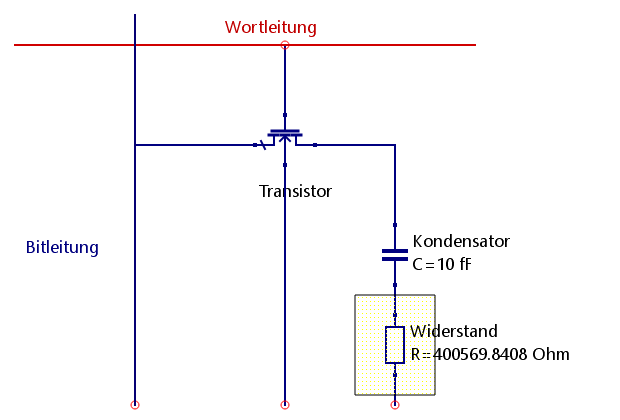
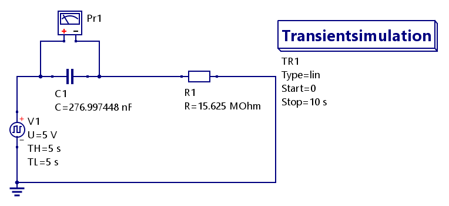
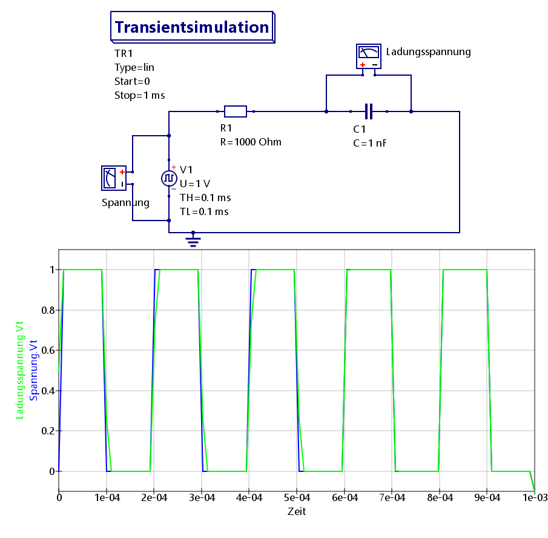
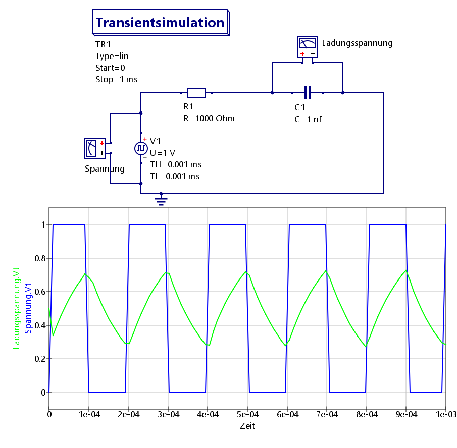
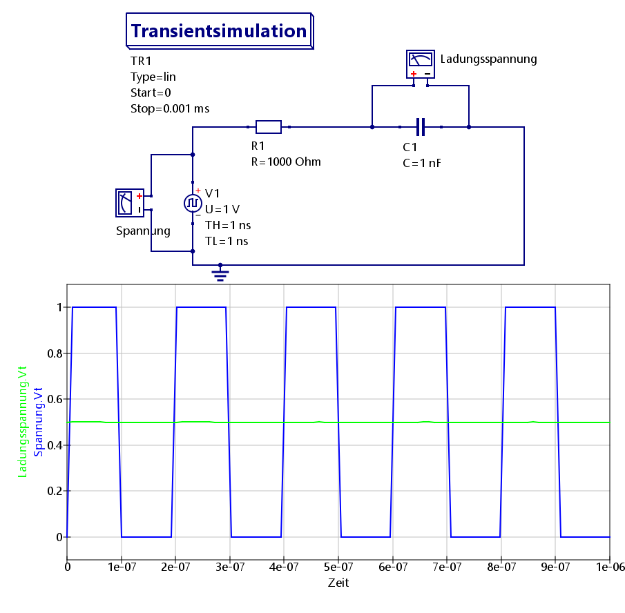

Die Funktion der Spannung an einem Kondensator lautet \( u_c(t) = U_0 \cdot \left( 1 - e^{- \frac{t}{\tau}} \right) \), wobei \( \tau = R \cdot C \). Mit dem Wissen lässt sich die Formel nun nach R umstellen. Gegben sind Kapazität \( C = 10 \texttt{ fF} = 10 \cdot 10^{-15} \texttt{ F} \), die Zeit \( t = 12 \texttt{ ns} = 12 \cdot 10^{-9} \texttt{ s} \) und die zu dieser Zeit herrschende Spannung \( u_c(t) = 0.95 \cdot U_0 \).
\[ \begin{align*} u_c(t) &= U_0 \cdot \left( 1 - e^{- \frac{t}{\tau}} \right) \\ 0.95 \cdot U_0 &= U_0 \cdot \left( 1 - e^{- \frac{t}{R \cdot C}} \right) \\ 0.95 &= 1 - e^{- \frac{t}{R \cdot C}} \\ -0.05 &= - e^{- \frac{t}{R \cdot C}} \\ 0.05 &= e^{- \frac{t}{R \cdot C}} \\ ln(0.05) &= - \frac{t}{R \cdot C} \\ \\ ln(0.05) \cdot R &= - \frac{t}{ C} \\ \\ R &= - \frac{t}{C \cdot ln(0.05)} \\ \\ R &= - \frac{12 \cdot 10^{-9} \, s }{10 \cdot 10^{-15} \cdot ln(0.05) \, F} \\ \\ R &= - \frac{12 \, s}{10 \cdot 10^{-6} \cdot ln(0.05) \, F} \\ \\ R &= - \frac{12 \, s}{-2.99573 \cdot 10^{-5} \, F}\\ \\ R &= 400569.84083 \left[ \frac{s}{F} = \frac{s}{\frac{A \cdot s}{V}} = \frac{V}{A} = \Omega \right] \end{align*} \]Da wir den DRAM-Baustein als RC-Glied deuten sollen, liegt der Widerstand vor dem Kondensator:
Unter Umständen ist der Baustein in der Mitte falsch. Ich bitte dies einfach mal zu übersehen.
(Qucs Schaltbild nach wikipedia.org/DRAM)Gegeben sind die Ruhespannung \( U_r = 2.5 \, V \), der Ruhestrom \( I_r = 10 \, nA = 10 \cdot 10^{-9} \, A\), die Zeit \( t = 24 \, h = 86400 \, s\) und die Betriebsspannung \( U_0 = 5 \, V \).
Um die Kapazität zuberechnen, brauchen wir den Widerstand: \( R_r = \frac{U_r}{I_r} \). dabei muss beachtet werden, dass es sich um 16 Bauteile handelt. D.h. wir müssen den Widerstand zusätzlich durch 16 teilen:
\[ \begin{align*} R_r &= \frac{U_r}{I_r} = \frac{2.5 \, V}{10^{-8} \, A} = 250000000 \left[\frac{V}{A} = \Omega \right]\\ \\ R &= \frac{R_r}{16} = \frac{250000000 \, \Omega}{16} = 15625000 \, \Omega = 15.625 \, M\Omega \end{align*} \]Diesmal brauchen wir die Entladefunktion uc(t):
\[ \begin{align*} u_c(t) &= U_0 \cdot e^{- \frac{t}{R \cdot C}}\\ U_r &= U_0 \cdot e^{- \frac{t}{R \cdot C}}\\ \frac{U_r}{U_0} &= e^{- \frac{t}{R \cdot C}}\\ \\ ln\left( \frac{U_r}{U_0} \right) &= - \frac{t}{R \cdot C} \\ \\ C &= - \frac{t}{ R \cdot ln\left( \frac{U_r}{U_0} \right) } = - \frac{86400 \, s}{ 15625000 \, \Omega \cdot ln\left( \frac{2.5 \, V}{5 \, V} \right) } = - \frac{86400 \, s}{ -10830424.696249146 \, \Omega } \\ \\ C &= 0.007977526 \left[\frac{s}{\Omega} = \frac{s}{\frac{V}{A}} = \frac{A \cdot s}{V} = F \right]\\ \\ \end{align*} \]Für ein C* mit t = 3 s gilt dementsprechend:
\[ \begin{align*} C* &= - \frac{t}{ R \cdot ln\left( \frac{U_r}{U_0} \right) } = - \frac{3 \, s}{ 15625000 \, \Omega \cdot ln\left( \frac{2.5 \, V}{5 \, V} \right) } = - \frac{3 \, s}{ -10830424.696249146 \, \Omega } \\ \\ C* &= 2.76997448 \cdot 10^{-7} \left[\frac{s}{\Omega} = \frac{s}{\frac{V}{A}} = \frac{A \cdot s}{V} = F \right] = 276.997448 \, nF\\ \\ \end{align*} \]Hier das zugehörige Schaltbild:
Bei den Simulation liegt die Initialspannung des Kondensators bei 0 V (a), 2.5 V (b) und 5 V (c).
Gegeben sind der Widerstand \( R = 1 \, k\Omega \), die Kapazität \( C = 1 \, nF \) und das Tastverhältnis \( v = 0.5 \)
Da R und C gegeben sind, können wir das τ berechenen:
\[ \tau = R \cdot C = 1000 \cdot 10^{-9} \, \Omega \cdot F = 10^{-6} \left[ \Omega \cdot F = \frac{V}{A} \cdot \frac{A \cdot s}{V} = s \right] = 1 µs = 0.001 ms \]1. T >> τ
2. T = τ
3. T << τ
Für den Beweis brauchen wir die Ausgangsformel:
\[ \begin{align*} u_c(t) = \frac{1}{C} \int i_c(t) dt \\ \end{align*} \]Für den Strom gilt:
\[ \begin{align*} i(t) &= \frac{U_0(t)}{R} \cdot e^{-\frac{t}{\tau}} \\ \Rightarrow &\texttt{ da T << } \tau \texttt{ geht der Bruch im Exponenten gegen 0 und e somit gegen 1} \\ \Rightarrow i(t) &= \frac{U_0(t)}{R} \\ \\ \\ \Rightarrow u_c(t) &= \frac{1}{C} \int \frac{U_0(t)}{R} dt \\ &\texttt{Da R eine konstante Größe ist, kann man diese vor das Integral ziehen}\\ \Rightarrow u_c(t) &= \frac{1}{R \cdot C} \int U_0(t) dt \end{align*} \]Für die Halbwertszeit gilt:
\[ \begin{align*} u_c(t) &= U_0 \cdot \left( 1 - e^{ - \frac{t}{\tau} } \right) \\ 0.5 \cdot U_0 &= U_0 \cdot \left( 1 - e^{ - \frac{t}{\tau} } \right) \\ 0.5 &= 1 - e^{ - \frac{t}{\tau} } \\ -0.5 &= - e^{ - \frac{t}{\tau} } \\ 0.5 &= e^{ - \frac{t}{\tau} } \\ ln(0.5) &= - \frac{t}{\tau} \\ - ln(0.5) &= \frac{t}{\tau} \\ \frac{t}{\tau} &= 0.69314718 \end{align*} \]Dies gilt analog für das Entladen
{kind=link}